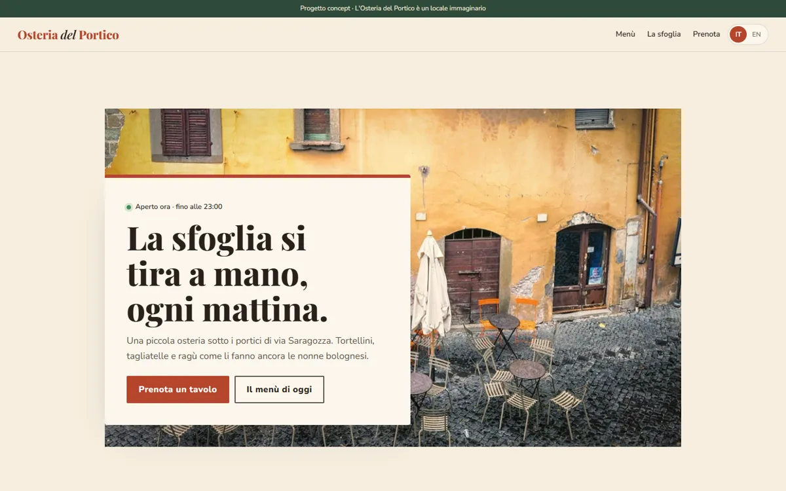
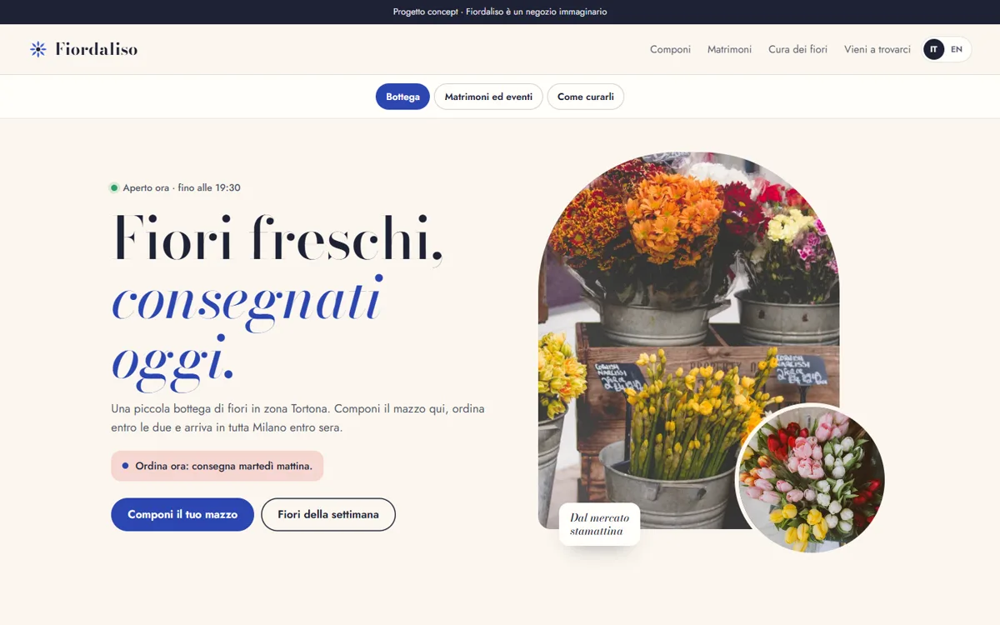

Concept · Food & drink · Bologna
Osteria del Portico Bologna
A trattoria site that sells the morning ritual, not just the menu
Case study →Disponibili per nuovi progetti a novembre
Bar, trattorie, parrucchieri e botteghe. Il partner di Milano viene nel tuo locale, scatta le foto e resta il tuo riferimento anche dopo la messa online.
Dove veniamo: Milano e prima cintura. Più lontano su accordo.
Viene nel tuo locale, ascolta, scatta le foto e resta il tuo riferimento dopo la messa online. Nessun passaggio di mano.

Concept · Food & drink · Bologna
A trattoria site that sells the morning ritual, not just the menu
Case study →

Concept · Shops & services · Milan
A florist where you build the bouquet and see the delivery time at once
Case study →Il preventivo definitivo arriva dopo una visita gratuita.
890 €
Per un bar o un negozio che deve farsi trovare in fretta.
La più scelta
1690 €
Per saloni e ristoranti che vivono di prenotazioni.
65 €/mese
Il sito Standard, senza costi iniziali.
Hai già un sito? Assistenza da 45 € al mese: hosting, backup, aggiornamenti e piccole modifiche.
Milano città e comuni vicini di persona; altrove anche online.
Bonifico o carta. I piani mensili si pagano ogni mese.
Sì, i turisti lo apprezzano. La seconda lingua è inclusa nel piano Standard.
Sistemiamo il profilo Google e colleghiamo prenotazioni e recensioni.
Tre domande veloci. La prima visita è gratuita e senza impegno.